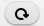

Welcome to RiskID
Welcome to RiskID, a visual analytics tool that combines visualization with clustering techniques to assist the user in the process of labeling connections.
Sign up
You need a RiskID account before start to use it. To get a user account is necessary to fill the registration form. All form fields are mandatory. Once the form task is finished you can enter the application
User Log In
Una vez que contamos con una cuenta de usuario en RiskID podemos ingresar a través del formulario de login.
Main Page
RiskID cuenta con una sola página principal para realizar el centro de las actividades. Organizada por diferentes secciones podemos observar un primer panel horizontal superior que nos muestra información sobre el usuario logueado y la opción de salir
Seguido otro panel horizontal que brinda tres opciones:
-
1. Control para seleccionar el conjunto de datos que vamos a etiquetar (en este caso solo contamos con uno denominado Connections 22)
-
2. Botón para una vez terminado el proceso de etiquetado de las conexiones podamos descargar el conjunto de datos modificados por el usuario. Esta opción es muy importante y aunque puede realizarse en cualquier momento del proceso de etiquetado es fundamental realizarlo al final para obtener todos los datos.
-
3. Botón para obtener una leyenda con el significado de las siglas sp, wp, wnp, snp, ds, dm, dl, ss, sm, sl
Por último tenemos dos secciones verticales que componen el centro de atención de la aplicacion y serán descritas a continuación.
Connection List
El Listado de Conexiones muestra información extraida de las conexiones que ya están o serán etiquetadas por el usuario. Estas conexiones ya han sido reagrupdas previamente siguiendo una estrategía de cercanía (comparación hecha sobre la base de la composición de su modelo de letras) entre ellas de manera tal que vamos a tener el listado organizado por tres grupos de conexiones. El color de fondo de cada elemento en la lista indica dicha agrupación. Lo primero que encontramos es una seccion para facilitar el trabajo con las mismas que contiene un botón para resetear el listado de conexiones para volver al orden inicial , y un conjunto de opciones para filtrar las conexiones por las etiquetas: Botnet, Normal, Unlabelled y para obtener todas las conexiones nuevamente.
Debajo podemos observar el listado de las conexiones representadas utilizando un conjunto de símbolos y colores. Al inicio de cada conexión encontramos un círculo que puede tomar los colores rojo, verde o amarillo. Estos colores representan la etiqueta actual de la conexión donde el color rojo = Botnet, verde = Normal y amarillo = Unlabelled. De esta manera a medida que el usuario vaya etiquetando irán cambiando los colores de estos círculos. Seguido tenemos un número que indica el índice de la conexión en todo el listado.
A continuación un conjunto de 10 celdas de colores para representar las características de periodicidad, duración y tamaño que caracterizan la conexión a través de su modelo de letras. Las 4 primeras celdas son las encargadas de representar la periodicidad (divididas en strong periodicity SP, weak periodicity WP, weak non periodicity WNP y strong non periodicity SNP) donde la intensidad del color naranja representa la presencia de esa característica. Esto quiere decir que mientras mas naranja sea la celda mayor es la presencia de esa característica en la conexión. Las 3 celdas que siguen son las encargadas de representar la duración (divididas en duration short, duration medium y duration large) y la intensidad del color verde representa la presencia de estas características. Las restantes 3 celdas son las encargadas de representar el tamaño (divididas en size short, size medium y size large) y la intensidad del color azul indica la precencia de estas características en la conexión.
Connections Details
El panel de la derecha es el encargado de mostrar detalles de la conexión seleccionada por el usuario y es la sección que permite el proceso de etiquetado de las conexiones a través de los botones "Botnet" y "Normal". Es posible seleccionar más de una conexión y por cada una de estas se mostrarán sus detalles.